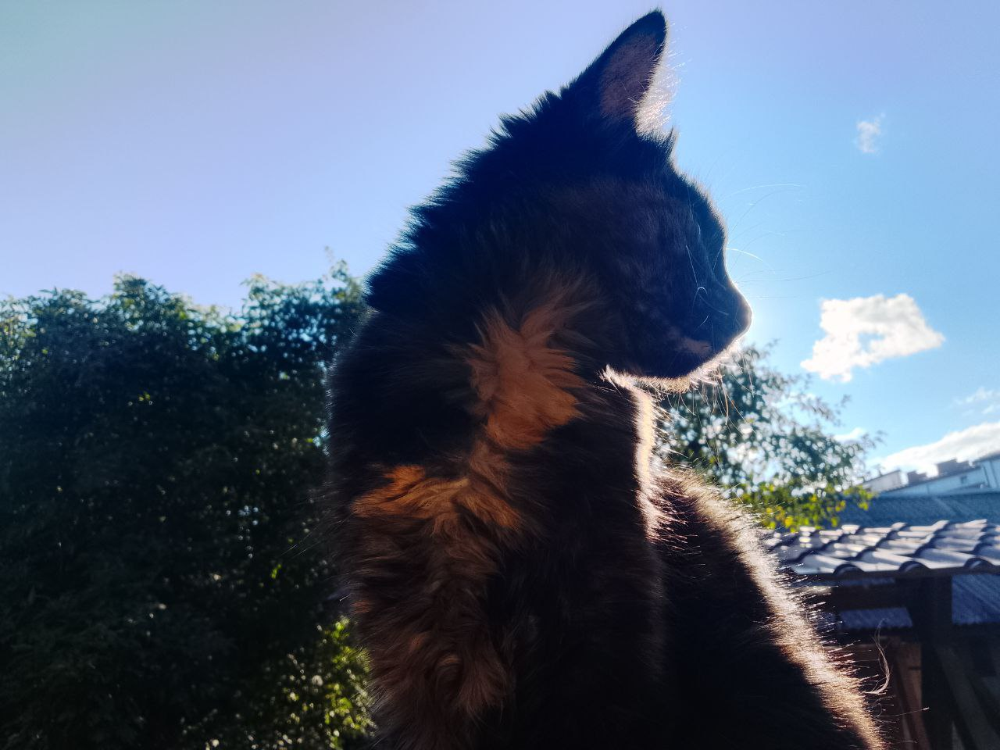

Експедиція в світ котів
Почати пригоду!
історія приручення котів
Вважається, що всі сучасні види котів походять від одного предка – близькосхідної дикої кішки Felis Sylvestris. Дослідники в основному заснували цю теорію на подібних структурах скелета.
Плюси приручення котів 🐱
- Приносять радість і покращують настрій
- Допомагають зменшити стрес
- Не потребують постійного вигулу
- Чистоплотні та самі доглядають за собою
- Можуть ловити мишей
Мінуси приручення котів ⚠️
- Потрібен регулярний догляд і витрати на їжу
- Можуть дряпати меблі
- Іноді проявляють незалежний характер
- Можлива алергія у людей
- Потрібно прибирати лоток